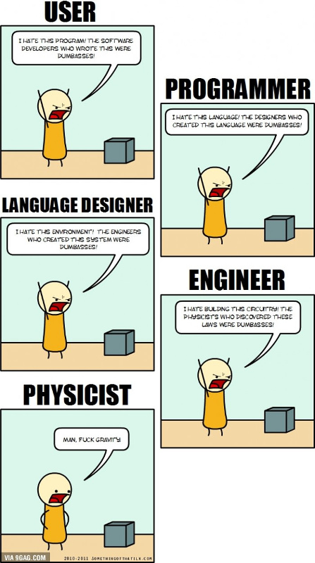

\(R^2 = \frac{\sum\left(\hat{y}_i - \bar{y}\right)^2}{\sum\left(y_i - \bar{y}\right)^2}\)
(Grunt server required)
(Non-Free)
class CognitiveReflectionTest(Page):
form_model = models.Player
form_fields = ['crt_bat',
'crt_widget',
'crt_lake']
class Iban(Page):
form_model = models.Player
form_fields = ['iban',
'bic',
'name',
'vorname']